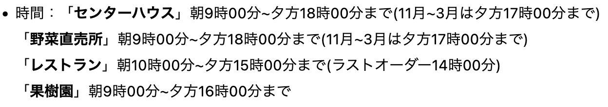
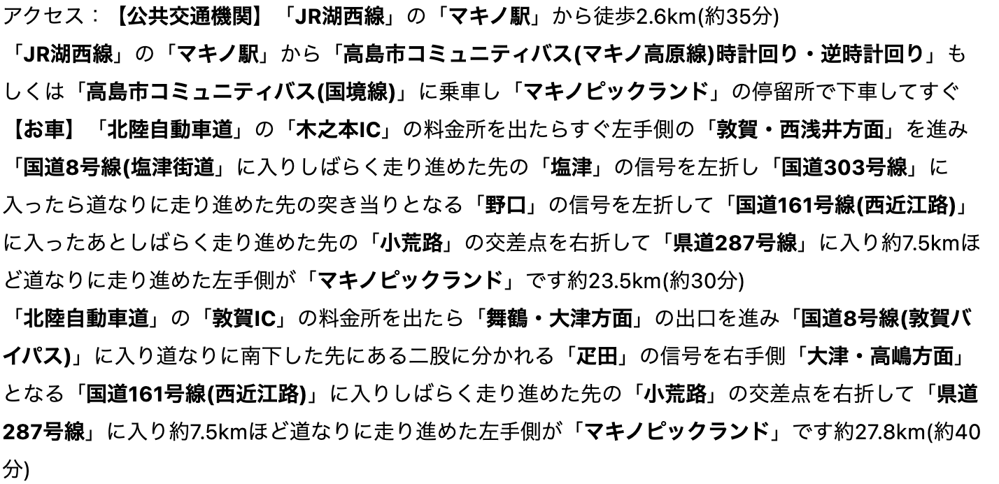
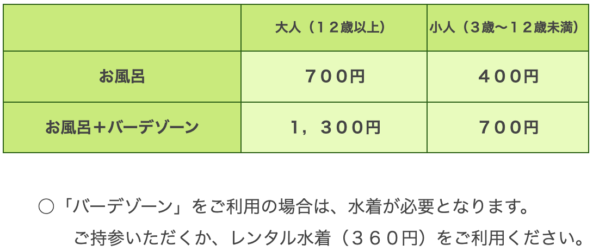

1. 白鬚神社

日本一大きな湖「琵琶湖」のほとりに佇む「白鬚神社」は、全国にある白鬚（白髭・白髯）神社の総本宮。祭神は猿田彦命で、長生きの神様として知られているほか、縁結びや子授け、交通安全、開運招福などさまざまなご利益があります。「白鬚神社」といえば、琵琶湖にポツリと浮かぶ鳥居が有名ですが、毎年9月5日や土日、大晦日、お正月には鳥居のライトアップも実施されます。
近年はパワースポットとしても人気ですが、白髭神社の社殿背後には山の上までつづく古墳群があります。その古墳のひとつである石室が岩戸社として祀られており、その隣ある磐座（神の御座所）が白髭神社の最大のパワースポットであると言われています。
| 時間 | 営業時間 09:00～17:00 |
|---|---|
| 料金 | 境内無料 |
| アクセス | 〒520-1122 滋賀県高島市鵜川２１５番地 京都・大阪方面より 京都東ＩＣから湖西道路・国道１６１号を北上 ４０㎞ 東京・名古屋方面より 米原ＪＣで北陸道へ、木之本ＩＣから国道８号・３０３号・１６１号を南下 ４５㎞ |
2. メタセコイア並木

マキノ高原につづく道路沿い、全長2.4kmに渡ってまっすぐと伸びる、約500本のメタセコイアの並木道。爽快で美しい景観は「新・日本の街路樹百景」にも選ばれています。新緑の季節には青々とした清々しさ、紅葉の季節にはロマンチックな雰囲気を醸し出し、そして冬には雪化粧をした幻想的な光景で私たちを楽しませてくれます。
| 時間 | 営業時間 24時間散策可能  |
|---|---|
| 料金 | 無料 |
| アクセス | 〒520-1834滋賀県高島市マキノ町寺久保835-1  |
3. マキノ農業公園マキノピックランド

旬の果物狩りが楽しめる農業公園です。マキノピックランドは大きく3つのゾーンから構成されています。
○果樹園ゾーン／関西圏ではめずらしい初夏のサクランボからブルーベリー、ぶどう、くり、さつまいも、りんごと旬の果物の収穫体験ができます。
○沿道修景ゾーン／果樹園を一直線に抜けるメタセコイア並木は、読売新聞社が選定する「新・日本街路樹百景」にも選ばれ、春夏秋冬訪れる人々を魅了します。
○パークゾーン／施設を総合的に管理するセンターハウスを中心に、カフェ、レストラン、芝生広場、グラウンドゴルフ場などが整備され、世代を問わずお楽しみいただけます。センターハウス内ではお土産や手作りジェラートアイスの販売もしています。
| 時間 | 観光果樹園:09:00～16:00 レストラン:11:00～15:00 カフェ:10:00～16:00 |
|---|---|
| 料金 | 公園内入園無料。 果樹園入園料(さくらんぼ・ブルーベリー・ぶどう・栗・りんご) 幼児(3歳～就学前) 500～900円。 小学生 900～1,300円 おとな(中学生以上) 1,300～1,800円。 ※果樹園は、お楽しみいただく味覚狩り、時期により料金が異なります。 |
| アクセス | 〒520-1834 滋賀県高島市マキノ町蛭口1632 マキノ駅からバスで10分 |
4. グリーンパーク想い出の森

緑豊かな樹林の中のリフレッシュパーク。落ち着いた雰囲気の「山荘くつき（和室・洋室）」やバンガローでの宿泊が出来ます。屋内プールやテニス、サッカーなどで汗を流した後は、「くつき温泉てんくう」でリフレッシュ。昔、朽木の山野を駆けめぐっていたといわれる天狗伝説に由来します。神経痛、疲労回復などに効果があり、天狗の露天風呂やきのこサウナ等もお楽しみいただけます。また、地元「宝牧場」のソフトクリームは入浴後に人気のデザートです。「里山レストラン天空」ではゆっくりお食事もお楽しみいただけます。
| 時間 | 営業時間 10:00～19:00(お風呂ゾーン10:00～21:00) |
|---|---|
| 料金 |  |
| アクセス | 〒520-1415 滋賀県高島市朽木柏341-3 【公共交通機関】 JR湖西線「安曇川」駅より江若バス・シャトルバスで約30分 【お車】 
|
5. マキノ高原・マキノ高原温泉さらさ

赤坂山の麓にあり、冬は真っ白なゲレンデ、春・秋は緑のじゅうたんが広がりオールシーズン楽しめるマキノ高原。マキノ林間スポーツセンターや、農業公園マキノピックランド、マキノ高原民宿村など周辺施設も充実しているので、林間学校やスポーツ合宿等のベース地としても最適です。 高原内でのキャンプはもちろん、併設されたクヌギ林の中にある林間サイトには、約100組収容できるキャンプサイトがあります。場内を流れる石積みのきれいなヨキトギ川では、水遊びや、魚つかみを楽しむこともできます。
花の百名山(山と渓谷社)に選ばれている赤坂山への登山ルートの起点でもあり、登山やハイキングも楽しむことができ、森林浴にも最適です。また、高原テニスコートやレンタサイクルなどのスポーツも楽しめ、琵琶湖岸のマキノサニーピーチまでは車で約10分と近く、一日では遊び切れないほどの自然が一杯です。 アウトドアで体を動かした後は併設のマキノ高原温泉｢さらさ｣でリフレッシュしてください。
| 時間 | 営業時間 10:00～21:00※最終受付は各30分前 |
|---|---|
| 料金 |  |
| アクセス | 滋賀県高島市マキノ町牧野931番地-3 【公共交通機関】 JR湖西線「マキノ駅」下車 ⇒バス「マキノ高原温泉さらさ」前 【お車】 ●名神高速「京都東」I.C⇒「西大津」BP⇒湖西道路⇒国道161号線経由（80分） ●北陸自動車道「木之本」I.C⇒国道8号線⇒国道303号線経由（30分） 「敦賀」I.C⇒国道8号線⇒国道161号線経由（40分） |